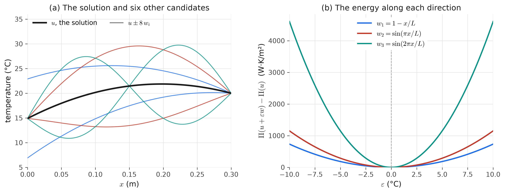

23 Class 23: Minimization, Symmetry, and Positive Definiteness
Why the problems we have been solving have exactly one solution, and when they do not
To this point, we have assumed that the problems we are working on can actually be solved, and that each has exactly one solution. In this class, we will show why this is true, and identify when it is not.
We will approach this question in two ways. First, we will show that the weak form is equivalent to a third statement of the problem, in which the solution is the function that minimizes an energy. This viewpoint explains why the solution is unique, and it is the minimization that Class 18 indicated would return here. Second, we will show that the stiffness matrix is symmetric and positive definite, which guarantees that the matrix equations of the finite element method have exactly one solution.
23.1 Notation
Throughout this class, we include the Robin terms of Class 22. To keep the expressions compact, the left side of the weak form will be combined into a single bilinear form, and the right side into a single linear form.
\[ B(w,u) := a(w,u) + (w,\hat{a}\,u)_{\Gamma_r} = \int_\Omega \nabla w\cdot\underline{\underline{\kappa}}\nabla u\;d\Omega + \int_{\Gamma_r} w\,\hat{a}\,u\;d\Gamma , \]
\[ L(w) := (w,f) + (w,h)_{\Gamma_h} + (w,\hat{c})_{\Gamma_r} = \int_\Omega w\,f\;d\Omega + \int_{\Gamma_h} w\,h\;d\Gamma + \int_{\Gamma_r} w\,\hat{c}\;d\Gamma . \]
When there is no Robin boundary, \(B(w,u) = a(w,u)\), which is the form used in Class 18. The weak form of Class 22 is then
\[ (\mathrm{W})\qquad \text{find } u\in\mathcal{S} \text{ such that } B(w,u) = L(w) \text{ for all } w\in\mathcal{V} . \]
Three properties of \(B\) will be used repeatedly.
- \(B\) is bilinear, meaning that it is linear in each of its two arguments, so that, for example, \(B(w, u_1 + \alpha\,u_2) = B(w,u_1) + \alpha\,B(w,u_2)\) for any number \(\alpha\). Similarly, \(L\) is linear.
- \(B\) is symmetric, \(B(w,u) = B(u,w)\), whenever the conductivity is symmetric. In index notation, \(w_{,i}\,\kappa_{ij}\,u_{,j} = u_{,j}\,\kappa_{ij}\,w_{,i} = u_{,j}\,\kappa_{ji}\,w_{,i}\), where the last step uses \(\kappa_{ij} = \kappa_{ji}\), and the Robin term is unchanged when \(w\) and \(u\) are exchanged.
- \(B(w,w)\ge 0\) whenever the conductivity is positive definite and \(\hat{a}\ge 0\), since
\[ B(w,w) = \int_\Omega \nabla w\cdot\underline{\underline{\kappa}}\nabla w\;d\Omega + \int_{\Gamma_r} \hat{a}\,w^2\;d\Gamma , \]
and both integrands are nonnegative.
Each of these assumptions has a physical meaning. The conductivity is symmetric and positive definite, so that heat never flows toward higher temperatures (see the 2D heat appendix). The Robin coefficient is also nonnegative in physical problems. For convection, \(\hat{a} = h_c\ge 0\), so that heat flows from a warmer surface into a cooler fluid and not the reverse, and for a spring support, \(\hat{a} = k_s\ge 0\), so that the spring resists the motion of the end rather than assisting it.
23.2 The minimization form
Define the total potential energy of a candidate function \(v\) as
\[ \Pi(v) := \tfrac{1}{2}\,B(v,v) - L(v) = \frac{1}{2}\int_\Omega \nabla v\cdot\underline{\underline{\kappa}}\nabla v\;d\Omega + \frac{1}{2}\int_{\Gamma_r} \hat{a}\,v^2\;d\Gamma - \int_\Omega v\,f\;d\Omega - \int_{\Gamma_h} v\,h\;d\Gamma - \int_{\Gamma_r} v\,\hat{c}\;d\Gamma . \]
\(\Pi\) is a functional: it takes an entire function \(v\) as its input, and returns a single number. The minimization form of the problem is
\[ (\mathrm{M})\qquad \text{find } u\in\mathcal{S} \text{ such that } \Pi(u)\le\Pi(v) \text{ for every } v\in\mathcal{S} . \]
The name comes from mechanics. For the pile of the rod appendix, which has no Robin boundary,
\[ \Pi(v) = \frac{1}{2}\int_0^L EA\,\left(v_{,x}\right)^2 dx - \int_0^L v\,f\;dx - v(0)\,h . \]
The first term is the strain energy stored in the pile when it is displaced by \(v\), and the remaining terms are the work done by the distributed load and by the load at the head of the pile. The principle of minimum potential energy states that, of all of the displacements that satisfy the support conditions, the one that actually occurs minimizes this total. For heat conduction, \(\Pi\) is not a physical energy, but it has the same mathematical structure, and it is still common to refer to it as an energy. Its first term is the square of the energy norm of Class 18, \(\|v\|_E^2 = B(v,v)\), and it measures how much \(v\) varies across the domain, weighted by the conductivity.
23.3 The weak form and the minimization form are equivalent
We now show that, under the assumptions above, a function solves (W) if and only if it solves (M).
23.3.1 From the weak form to the minimization form
Suppose that \(u\) solves (W), and let \(v\in\mathcal{S}\) be any other candidate. Write the difference between them as \(w = v - u\). Since \(u\) and \(v\) both equal \(g\) on \(\Gamma_g\), their difference is zero on \(\Gamma_g\), and therefore \(w\in\mathcal{V}\). Expanding the energy of \(v = u + w\) using the bilinearity of \(B\) gives
\[ \begin{aligned} \Pi(u + w) &= \tfrac{1}{2}B(u,u) + \tfrac{1}{2}B(u,w) + \tfrac{1}{2}B(w,u) + \tfrac{1}{2}B(w,w) - L(u) - L(w) \\[2pt] &= \underbrace{\left[\tfrac{1}{2}B(u,u) - L(u)\right]}_{\Pi(u)} + \underbrace{\left[B(w,u) - L(w)\right]}_{0 \text{ by (W), since } w\in\mathcal{V}} + \tfrac{1}{2}B(w,w) , \end{aligned} \]
where the second line uses the symmetry of \(B\) to combine \(\tfrac{1}{2}B(u,w) + \tfrac{1}{2}B(w,u) = B(w,u)\). Therefore, for every \(v\in\mathcal{S}\),
\[ \boxed{\;\Pi(v) = \Pi(u) + \tfrac{1}{2}\,B(v - u,\, v - u)\;} \]
Since \(B(w,w)\ge 0\), it follows that \(\Pi(v)\ge\Pi(u)\), and \(u\) minimizes the energy.
23.3.2 From the minimization form to the weak form
Suppose instead that \(u\) minimizes \(\Pi\) over \(\mathcal{S}\). Choose any \(w\in\mathcal{V}\) and any number \(\varepsilon\). Then \(u + \varepsilon w\in\mathcal{S}\), since adding a function that is zero on \(\Gamma_g\) does not change the values on \(\Gamma_g\). Define the ordinary function of one variable
\[ \varphi(\varepsilon) := \Pi(u + \varepsilon w) = \Pi(u) + \varepsilon\left[B(w,u) - L(w)\right] + \tfrac{1}{2}\,\varepsilon^2\,B(w,w) , \]
which follows from the same expansion as above, with \(\varepsilon w\) in place of \(w\). Since \(u\) minimizes \(\Pi\), the function \(\varphi\) has its minimum at \(\varepsilon = 0\), and therefore \(\varphi'(0) = 0\) (where the derivative is taken with respect to \(\varepsilon\)).
\[ \varphi'(0) = B(w,u) - L(w) = 0 . \]
Since \(w\in\mathcal{V}\) was arbitrary, this is the weak form (W).
The weak form therefore states that the derivative of the energy at the solution is zero in every admissible direction \(w\). The test functions are the directions in which the solution can be changed without violating the Dirichlet condition. This is the reason that the weak form is also called the variational form: the calculation above is the basic step of the calculus of variations, and \(B(w,u) - L(w)\) is called the first variation of \(\Pi\) in the direction \(w\). In mechanics, \(w\) is a virtual displacement, and the weak form is the principle of virtual work, which will return in the classes on elasticity.
Figure 23.1 shows this for the wall of Class 22, with its outer face exchanging heat with air at \(h_c\) = 10 W/(m²·K). Three directions \(w_1\), \(w_2\), and \(w_3\) are chosen, each of which is zero at the interior face, where the temperature is prescribed. Moving away from the solution in any of these directions increases the energy, and each curve has zero slope at \(\varepsilon = 0\).

23.3.3 Uniqueness
The energy viewpoint also shows that the solution is unique. Suppose that \(u_1\) and \(u_2\) both solve (W), and let \(e = u_2 - u_1\in\mathcal{V}\). Applying the boxed identity twice, once with \(u = u_1\) and \(v = u_2\), and once with the roles exchanged, gives
\[ \Pi(u_2) = \Pi(u_1) + \tfrac{1}{2}B(e,e) \qquad\text{and}\qquad \Pi(u_1) = \Pi(u_2) + \tfrac{1}{2}B(e,e) . \]
Adding these two equations gives \(B(e,e) = 0\), that is,
\[ \int_\Omega \nabla e\cdot\underline{\underline{\kappa}}\nabla e\;d\Omega + \int_{\Gamma_r} \hat{a}\,e^2\;d\Gamma = 0 . \]
Both integrals are nonnegative, so both must be zero.
- Since \(\underline{\underline{\kappa}}\) is positive definite, \(\nabla e\cdot\underline{\underline{\kappa}}\nabla e > 0\) wherever \(\nabla e\neq\underline{0}\). The first integral can only be zero if \(\nabla e = \underline{0}\) throughout \(\Omega\), which means that \(e\) is a constant (assuming that \(\Omega\) is a single connected piece).
- If \(\Gamma_g\) is not empty, then \(e = 0\) on \(\Gamma_g\), since \(e\in\mathcal{V}\), and the constant must be zero.
- If \(\Gamma_g\) is empty, but \(\hat{a} > 0\) on some part of \(\Gamma_r\), then the second integral can only be zero if \(e = 0\) on that part, and again the constant must be zero.
In either case, \(e = 0\), and \(u_1 = u_2\). The solution of the weak form, and therefore of the strong form, is unique provided that
- the conductivity \(\underline{\underline{\kappa}}\) is symmetric and positive definite throughout \(\Omega\),
- \(\hat{a}\ge 0\) on \(\Gamma_r\), and
- either \(\Gamma_g\) is not empty, or \(\hat{a} > 0\) on some part of \(\Gamma_r\).
Geometrically, \(\Pi\) can be pictured as a bowl over the space of candidate functions. The weak form states that the bowl is flat at \(u\) in every admissible direction, and the three conditions ensure that the bowl curves upward in every direction, so that it has only one bottom.
The arguments above show that if a solution exists, it is unique, and it minimizes the energy. Showing that a minimizer exists at all in the infinite-dimensional space \(\mathcal{S}\) requires more advanced analysis, in particular the Lax–Milgram theorem, which relies on the same three conditions together with properties of the space \(H^1\). We will take this result as given. For the finite element problem, which has finitely many unknowns, existence follows directly from the properties of the stiffness matrix, as shown below.
23.4 The finite element problem is also a minimization
The Galerkin method looks for \(u^h\) in the smaller space \(\mathcal{S}^h\subset\mathcal{S}\). Writing a candidate as \(v^h + g^h\), with \(v^h = \sum_B d_B N_B\) as in Class 22, and substituting into \(\Pi\) gives
\[ \Pi(v^h + g^h) = \tfrac{1}{2}\,\underline{d}^T\underline{\underline{K}}\,\underline{d} - \underline{d}^T\underline{F} + \text{(terms that do not depend on } \underline{d}\text{)} , \]
where \(\underline{\underline{K}}\) and \(\underline{F}\) are the stiffness matrix and force vector of Class 22. In index notation, the first two terms are \(\tfrac{1}{2}d_A K_{AB} d_B - d_A F_A\). The energy is now an ordinary function of the vector of unknowns \(\underline{d}\), and its minimum is found by setting its gradient to zero. Using the symmetry of \(\underline{\underline{K}}\),
\[ \frac{\partial\Pi}{\partial d_A} = K_{AB}\,d_B - F_A = 0 \qquad\Longleftrightarrow\qquad \underline{\underline{K}}\,\underline{d} = \underline{F} , \]
which are the Galerkin equations. The matrix of second derivatives of \(\Pi\) is \(\partial^2\Pi/\partial d_A\partial d_B = K_{AB}\), so the shape of the energy as a function of \(\underline{d}\) is determined entirely by \(\underline{\underline{K}}\). For problems with a symmetric bilinear form, such as this one, the Galerkin method is therefore the same as minimizing the energy over \(\mathcal{S}^h\), which is known as the Rayleigh–Ritz method.
This also connects the two minimization statements of Class 18. Since \(\mathcal{S}^h\subset\mathcal{S}\), the boxed identity holds for every \(v\in\mathcal{S}^h\), and states that
\[ \Pi(v) = \Pi(u) + \tfrac{1}{2}\,\left\|v - u\right\|_E^2 . \]
Since \(\Pi(u)\) is a fixed number, the function in \(\mathcal{S}^h\) with the smallest energy is also the function in \(\mathcal{S}^h\) that is closest to \(u\) in the energy norm. The physical statement (the solution minimizes the energy) and the approximation statement (the finite element solution is the best approximation in the energy norm, which is Céa’s lemma) are therefore two views of the same result.
23.5 The stiffness matrix is symmetric and positive definite
With the Robin terms included, the entries of the stiffness matrix are \(K_{AB} = B(N_A,N_B)\), for \(A\) and \(B\) not on \(\Gamma_g\). We now show that \(\underline{\underline{K}}\) is symmetric and positive definite.
23.5.1 Symmetry
In index notation,
\[ K_{AB} = \int_\Omega N_{A,i}\,\kappa_{ij}\,N_{B,j}\;d\Omega + \int_{\Gamma_r} N_A\,\hat{a}\,N_B\;d\Gamma , \qquad K_{BA} = \int_\Omega N_{B,i}\,\kappa_{ij}\,N_{A,j}\;d\Omega + \int_{\Gamma_r} N_B\,\hat{a}\,N_A\;d\Gamma . \]
The two Robin integrals are equal. Renaming the dummy indices \(i\leftrightarrow j\) in the first integral of \(K_{BA}\) gives \(\int_\Omega N_{B,j}\,\kappa_{ji}\,N_{A,i}\,d\Omega = \int_\Omega N_{A,i}\,\kappa_{ji}\,N_{B,j}\,d\Omega\), which equals the first integral of \(K_{AB}\) when \(\kappa_{ji} = \kappa_{ij}\). The same steps in matrix notation are
\[ \left(\nabla N_A\right)^T\underline{\underline{\kappa}}\,\nabla N_B = \left(\underline{\underline{\kappa}}^T\nabla N_A\right)^T\nabla N_B = \left(\underline{\underline{\kappa}}\,\nabla N_A\right)^T\nabla N_B = \left(\nabla N_B\right)^T\underline{\underline{\kappa}}\,\nabla N_A , \]
where the second step uses \(\underline{\underline{\kappa}}^T = \underline{\underline{\kappa}}\), and the last step uses the fact that the dot product of two vectors does not depend on their order. Therefore, \(\underline{\underline{K}}\) is symmetric whenever \(\underline{\underline{\kappa}}\) is symmetric.
23.5.2 Positive definiteness
A symmetric matrix \(\underline{\underline{K}}\) is positive definite if
- \(\underline{c}^T\underline{\underline{K}}\,\underline{c}\ge 0\) for every vector \(\underline{c}\), which alone is called positive semidefinite, and
- \(\underline{c}^T\underline{\underline{K}}\,\underline{c} = 0\) only when \(\underline{c} = \underline{0}\).
Equivalently, every eigenvalue of \(\underline{\underline{K}}\) is positive. To check these properties, take any vector \(\underline{c}\) and build the function \(w^h = \sum_A c_A N_A\in\mathcal{V}^h\) from it. Using summation notation and the bilinearity of \(B\),
\[ \underline{c}^T\underline{\underline{K}}\,\underline{c} = c_A\,K_{AB}\,c_B = c_A\,B(N_A,N_B)\,c_B = B\!\left(c_A N_A,\; c_B N_B\right) = B(w^h,w^h) = \int_\Omega \nabla w^h\cdot\underline{\underline{\kappa}}\nabla w^h\;d\Omega + \int_{\Gamma_r} \hat{a}\,\left(w^h\right)^2 d\Gamma . \]
The question about the matrix has become the same question that was answered for uniqueness.
- Both integrals are nonnegative when \(\underline{\underline{\kappa}}\) is positive definite and \(\hat{a}\ge 0\), so \(\underline{c}^T\underline{\underline{K}}\,\underline{c}\ge 0\).
- If \(\underline{c}^T\underline{\underline{K}}\,\underline{c} = 0\), then, by the same argument as before, \(\nabla w^h = \underline{0}\), so \(w^h\) is a constant. This constant is zero if \(\Gamma_g\) is not empty, since every basis function in \(\mathcal{V}^h\) is zero on \(\Gamma_g\), or if \(\hat{a} > 0\) on some part of \(\Gamma_r\). Finally, \(w^h = 0\) implies \(\underline{c} = \underline{0}\), since evaluating \(w^h\) at the node of \(N_A\) gives \(c_A\), because each Lagrange basis function equals one at its own node and zero at all other nodes.
The stiffness matrix is therefore symmetric and positive definite under the same three conditions found for uniqueness. Consequently, \(\underline{\underline{K}}\) is invertible, and \(\underline{\underline{K}}\,\underline{d} = \underline{F}\) has exactly one solution for any force vector. In terms of the energy, \(\Pi(\underline{d})\) is a bowl with a single lowest point.
23.6 When the conditions fail
23.6.1 Only Neumann boundaries
If the entire boundary is a Neumann boundary, the third condition fails. The basis functions sum to one everywhere, \(\sum_A N_A = 1\), so choosing \(\underline{c} = \underline{1} = (1, 1, \ldots, 1)\) gives \(w^h = 1\), whose gradient is zero. Then \(\underline{1}^T\underline{\underline{K}}\,\underline{1} = 0\), and in fact \(\underline{\underline{K}}\,\underline{1} = \underline{0}\), so \(\underline{\underline{K}}\) is singular. Physically, when only fluxes are prescribed, adding the same constant to the temperature everywhere changes nothing, since the problem contains no reference temperature. This is the same situation as the floating pile in the rod appendix, which can translate as a rigid body.
A singular system may have no solution or infinitely many solutions. Multiplying \(\underline{\underline{K}}\,\underline{d} = \underline{F}\) by \(\underline{1}^T\) shows that a solution can exist only if \(\underline{1}^T\underline{F} = 0\), and since the basis functions sum to one, this condition is
\[ \sum_A F_A = \int_\Omega f\;d\Omega + \int_{\Gamma} h\;d\Gamma = 0 . \]
This is a statement of steady state: the total heat generated in the body and entering through its boundary must be zero. If this holds, there are infinitely many solutions, which differ from each other by a constant, and an additional condition, such as fixing the temperature at one point, is needed to select one of them. If it does not hold, there is no steady-state solution at all, since the body continues to heat up or cool down. In terms of the energy, \(\Pi(\underline{d} + t\,\underline{1}) = \Pi(\underline{d}) - t\,\underline{1}^T\underline{F}\), so the energy decreases without bound along the direction \(\underline{1}\).
23.6.2 Robin coefficients that are small
If there is no Dirichlet boundary and \(\hat{a} > 0\) on \(\Gamma_r\), the stiffness matrix is positive definite, but its smallest eigenvalue decreases as \(\hat{a}\) decreases. Table 23.1 shows this for a one-dimensional bar with \(\kappa = 1\), length 1, and eight linear elements.
| boundary conditions (Neumann at \(x = 1\)) | smallest eigenvalue | largest eigenvalue | ratio |
|---|---|---|---|
| Dirichlet at \(x = 0\) | 0.272 | 30.9 | 113 |
| Robin at \(x = 0\), \(\hat{a} = 1\) | 0.0831 | 31.0 | 374 |
| Robin at \(x = 0\), \(\hat{a} = 0.1\) | 0.0108 | 31.0 | 2,882 |
| Robin at \(x = 0\), \(\hat{a} = 0.01\) | 0.00111 | 31.0 | 28,020 |
| Neumann at both ends | 0 (to roundoff) | 31.0 | infinite |
As \(\hat{a}\) decreases, the smallest eigenvalue approaches zero, and the ratio of the largest to the smallest eigenvalue, which is called the condition number, grows. A large condition number means that small changes in \(\underline{F}\), including roundoff errors, can produce large changes in \(\underline{d}\). Physically, a boundary that is only weakly connected to its surroundings requires a large difference from the reference value to pass a given flux, such as a large temperature difference for a surface cooled by convection, or a large displacement for the end of a rod resting on a soft spring.
23.6.3 Other ways the conditions can fail
- If \(\underline{\underline{\kappa}}\) is not positive definite somewhere, for example in a region assigned zero conductivity or given incorrect material data, the stiffness matrix can be singular.
- If \(\Omega\) consists of separate pieces, such as two parts of an assembly that the mesh does not connect, each piece needs its own Dirichlet boundary or Robin boundary with \(\hat{a} > 0\).
- If \(\hat{a} < 0\), which does not occur for convection or for spring supports, positive definiteness can be lost.
- Some problems are not symmetric at all. For example, the transport of a contaminant by a moving fluid adds a term of the form \(\int_\Omega w\,\left(\underline{v}\cdot\nabla u\right)d\Omega\) to the weak form, where \(\underline{v}\) is the fluid velocity, and this term changes when \(w\) and \(u\) are exchanged. The stiffness matrix is then not symmetric, and there is no energy whose minimum is the solution. The Galerkin method still applies, and existence and uniqueness can often still be shown using the Lax–Milgram theorem, which does not require symmetry, but the minimization viewpoint of this class is lost.
23.7 Seeing the cases on a small problem
The widget below shows the energy \(\Pi(\underline{d}) = \tfrac{1}{2}\,\underline{d}^T\underline{\underline{K}}\,\underline{d} - \underline{d}^T\underline{F}\) for the smallest possible problem: a bar of one linear element, with \(\kappa/L = 1\), whose two nodal values are \(d_1\) (left end) and \(d_2\) (right end). Each case uses a different pair of boundary conditions. The energy is shaded so that darker regions have lower energy, and the thin curves are curves of constant energy.
Things to try:
- Dirichlet + Neumann. Without the Dirichlet condition, the energy has no lowest point. The Dirichlet condition restricts the candidates to a line, and along that line there is only one minimum. This is why removing the Dirichlet rows and columns turns a singular matrix into an invertible one.
- Robin + Neumann. Even without a Dirichlet condition, the Robin term makes the energy a bowl. Decrease \(\hat{a}\), and observe the smaller eigenvalue and the location of the minimum.
- Neumann, balanced. The heat entering equals the heat leaving, and the energy is a trough whose floor is flat.
- Neumann, unbalanced. The floor of the trough is tilted, and the energy has no minimum.
23.8 Why this matters in practice
- Solvers. Symmetric positive definite systems can be solved with methods that do not work for general matrices. The Cholesky factorization requires about half of the work of a general LU factorization, and the conjugate gradient method, which is widely used for large finite element problems, requires a symmetric positive definite matrix.
- Debugging. An error such as
LinAlgError: Singular matrixalmost always indicates a missing or misapplied boundary condition, for example a model with no Dirichlet boundary, Robin coefficients that were not assembled, or a region of the mesh that is not connected to the rest. - Verification. Three inexpensive checks follow from this class. The assembled stiffness matrix should be symmetric, which can be checked with
np.allclose(K, K.T). On a small mesh, its smallest eigenvalue should be positive. For a problem with only Neumann boundaries, \(\underline{\underline{K}}\,\underline{1}\) should be zero to roundoff, which checks the assembly of the interior terms without requiring an exact solution.
23.9 Summary
- The weak form is equivalent to the minimization form: the solution minimizes the energy \(\Pi(v) = \tfrac{1}{2}B(v,v) - L(v)\) over all functions that satisfy the Dirichlet condition. The weak form states that the derivative of \(\Pi\) at the solution is zero in every admissible direction, which is why it is also called the variational form.
- For every \(v\in\mathcal{S}\), \(\Pi(v) = \Pi(u) + \tfrac{1}{2}\|v - u\|_E^2\). This identity shows that the solution is unique, and that the finite element solution, which minimizes \(\Pi\) over \(\mathcal{S}^h\), is the best approximation in the energy norm.
- The stiffness matrix is symmetric when the conductivity is symmetric, and positive definite when the conductivity is positive definite, \(\hat{a}\ge 0\), and either \(\Gamma_g\) is not empty or \(\hat{a} > 0\) on part of \(\Gamma_r\). Under these conditions, \(\underline{\underline{K}}\,\underline{d} = \underline{F}\) has one solution.
- With only Neumann boundaries, \(\underline{\underline{K}}\) is singular, and a solution exists only if the total heat supplied is zero, in which case it is determined only up to a constant.
- Small Robin coefficients without a Dirichlet boundary give a matrix that is positive definite but poorly conditioned.
- Problems that are not symmetric, such as transport by a moving fluid, have no minimization form, although the Galerkin method still applies.